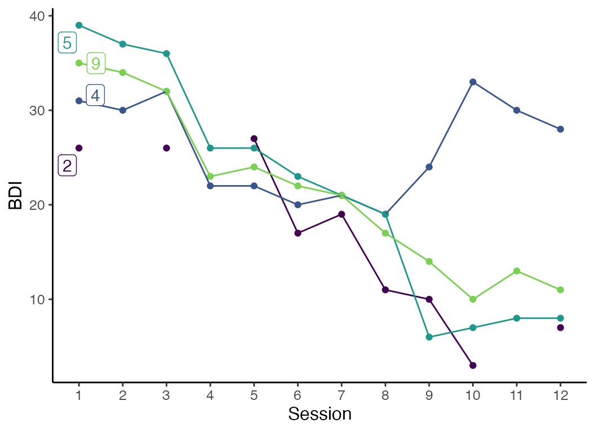
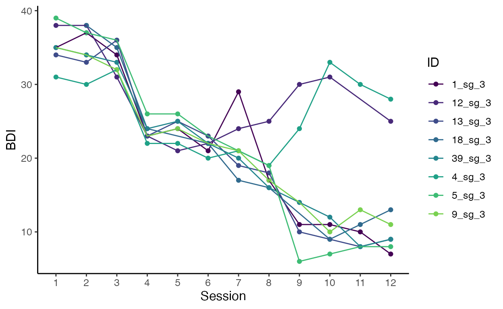
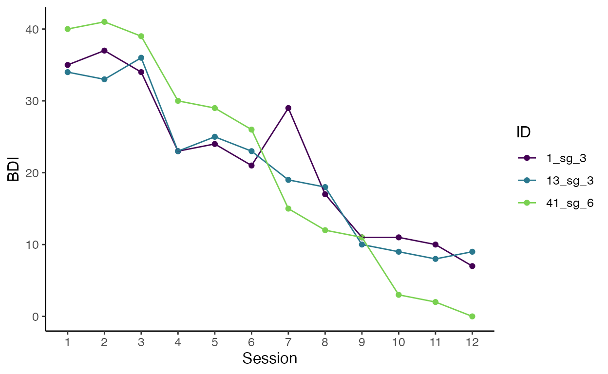

A tutorial on using the suddengains R package
2019-11-19
Source:vignettes/suddengains-tutorial.Rmd
suddengains-tutorial.RmdPlease cite this vignette and the R package suddengains as:
citation("suddengains")
#>
#> Wiedemann, M., Thew, G. R., Stott, R., & Ehlers, A. (2019).
#> suddengains: An R package to identify sudden gains in longitudinal
#> data. https://doi.org/10.31234/osf.io/2wa84.
#>
#> A BibTeX entry for LaTeX users is
#>
#> @Article{,
#> author = {Milan Wiedemann and Graham R Thew and Richard Stott and Anke Ehlers},
#> title = {{suddengains}: {An} {R} package to identify sudden gains in longitudinal data},
#> journal = {PsyArXiv Preprints},
#> year = {2019},
#> note = {R package version 0.4.0},
#> doi = {10.31234/osf.io/2wa84},
#> url = {https://github.com/milanwiedemann/suddengains},
#> }Introduction
This vignette shows how the suddengains R package can be used to help with the methods of research studies looking at sudden gains as described by Tang and DeRubeis (1999). More about the theoretical background of sudden gains and why it might be helpful to use this package can be found in our preprint Wiedemann et al. (2019). The following vignette illustrates the main functions of the package using the example data set sgdata.
Data
Below are two interactive tables of depression and rumination scores from the data set (sgdata) that comes with the suddengains package. The data is automatically loaded together with the package when running library(suddengains). Each measured construct contains a baseline measure (s0), twelve weekly measures during therapy (s1 to s12), and two follow-up measures (fu1 and fu2). Note that some values for each measure are missing, shown here as empty cells. For an example of a missing value see bdi_s2 for id = 2 in the table below.
Preparation of data
Select cases
The package offers two methods to select cases for the calculation of sudden gains.
-
"pattern": cases providing enough data to apply the Tang and DeRubeis (1999) criteria will be selected -
"min_sess": cases with a minimum number of available data points (specified inmin_sess_num) will be selected
By default the argument return_id_lgl is set to FALSE, which adds a new variable named sg_select at the end of the data frame specified in the data argument. This newly calculated variable sg_select is logical and indicates whether a case is selected (TRUE) or not selected (FALSE) based on the method specified. When the argument return_id_lgl is set to TRUE, only the id variable specified in id_var_name and the new variable sg_select will be returned as the output of this function.
# 1. method = "pattern"
select_cases(data = sgdata,
id_var_name = "id",
sg_var_list = c("bdi_s1", "bdi_s2", "bdi_s3", "bdi_s4",
"bdi_s5", "bdi_s6", "bdi_s7", "bdi_s8",
"bdi_s9", "bdi_s10", "bdi_s11", "bdi_s12"),
method = "pattern",
return_id_lgl = FALSE)
# 2. method = "min_sess"
select_cases(data = sgdata,
id_var_name = "id",
sg_var_list = c("bdi_s1", "bdi_s2", "bdi_s3", "bdi_s4",
"bdi_s5", "bdi_s6", "bdi_s7", "bdi_s8",
"bdi_s9", "bdi_s10", "bdi_s11", "bdi_s12"),
method = "min_sess",
min_sess_num = 9,
return_id_lgl = TRUE)The following code shows how to select cases based on the "pattern" method and save them as an object called sgdata_select. This function goes through the data and selects all cases with at least one of the following data patterns.
| Data pattern | x1 | x2 | x3 | x4 | x5 | x6 |
|---|---|---|---|---|---|---|
| 1. | x | N | x | x | . | . |
| 2. | x | N | x | . | x | . |
| 3. | x | . | N | x | x | . |
| 4. | x | . | N | x | . | x |
Note: x1 to x6 are consecutive data points of the primary outcome measure. “x” = Present data; “.” = Missing data. “N” represents available data to be examined as a possible pregain session.
sgdata_select <- select_cases(data = sgdata,
id_var_name = "id",
sg_var_list = c("bdi_s1", "bdi_s2", "bdi_s3", "bdi_s4",
"bdi_s5", "bdi_s6", "bdi_s7", "bdi_s8",
"bdi_s9", "bdi_s10", "bdi_s11", "bdi_s12"),
method = "pattern",
return_id_lgl = FALSE) %>%
dplyr::filter(sg_select == TRUE)
#> The method 'pattern' was used to select cases.
#> See help('select_cases') for more information.Identification of sudden gains
Define cut-off for first criterion
This function calculates a cut-off value to use for the first sudden gains criterion based on the Reliable Change Index (RCI, Jacobson and Truax 1991). The following 5 elements are returned by the function
-
sd: Standard deviation manually endered using thesdargument or the standard deviation of the values specified indata_sd -
reliability: Reliability of the measure manually specified inreliabilityor the internal consistency (Cronbach’s alpha) calculated from the item-by-item data specified indata_reliability. -
standard_error_measurement: Standard error of measurement, see formula below:
\[ \text{standard_error_measurement} = {\text{sd}} \times \sqrt{1-\text{reliability}} \]
-
standard_error_difference: Standard error of the difference between two test scores, see formula below:
\[ \text{standard_error_difference} = \sqrt{2\times (\text{standard_error_measurement})^2} \]
-
reliable_change_value: Value that is considered to reflect reliable change on a measure (Jacobson and Truax 1991). This value is calculated using:
\[\text{reliable_change_value} = 1.96 \times \text{standard_error_difference}\]
The last element of the list sg_crit1_cutoff can be used as a cut-off value for the first sudden gains criterion.
# Define cut-off value for first SG criterion
# The sd and the reliability are specified manually
define_crit1_cutoff(sd = 10.5,
reliability = 0.931)
# The reliability is specified manually
# The sd gets calculated from variable "bdi_s0" in "sgdata"
define_crit1_cutoff(data_sd = sgdata$bdi_s0,
reliability = 0.931)Identify sudden gains and losses
To identify sudden gains/losses you can use the identify_sg and identify_sl functions. These functions return a data frame with new variables indicating for each between-session interval whether a sudden gain/loss was identified. For example the variable sg_2to3 holds information whether a sudden gains occurred from session two to three, with two being the pregain and three being the postgain session.
Sudden gains
identify_sg(data = sgdata,
sg_crit1_cutoff = 7,
sg_crit2_pct = 0.25,
sg_crit3 = TRUE,
id_var_name = "id",
sg_var_list = c("bdi_s1", "bdi_s2", "bdi_s3", "bdi_s4",
"bdi_s5", "bdi_s6", "bdi_s7", "bdi_s8",
"bdi_s9", "bdi_s10", "bdi_s11", "bdi_s12"),
identify_sg_1to2 = FALSE)The argument crit123_details = TRUE returns additional information about whether each of the three sudden gains criteria are met. More information about this can be found in the section “Adaptations to the original sudden gains criteria” below.
identify_sg(data = sgdata,
sg_crit1_cutoff = 7,
sg_crit2_pct = 0.25,
sg_crit3 = TRUE,
id_var_name = "id",
sg_var_list = c("bdi_s1", "bdi_s2", "bdi_s3", "bdi_s4",
"bdi_s5", "bdi_s6", "bdi_s7", "bdi_s8",
"bdi_s9", "bdi_s10", "bdi_s11", "bdi_s12"),
identify_sg_1to2 = FALSE,
crit123_details = TRUE)If we wish to analyse sudden gains that occur immediately after the first session, we include the option to specify a baseline measure in sg_var_list (in this example "bdi_s0") and set identify_sg_1to2 == TRUE. This will allow the identification of sudden gains between session 1 and session 2, provided data from the baseline measure and the first session are available.
Sudden losses
To identify sudden losses, you can use the identify_sl function. All arguments are the same as in the identify_sg function, but the sg_crit1_cutoff must be set to be a negative value.
Adaptations to the original sudden gains criteria
The package includes options for modifying or omitting the three original sudden gains criteria suggested by Tang and DeRubeis (1999):
- The cut-off value for clinically meaningful change on the measure used to identify sudden gains is specified using the argument
sg_crit1_cutoff. To omit the first criterion when identifying sudden gains, this argument can be ‘switched off’ by usingsg_crit1_cutoff = NULL. - The minimum percentage drop from the pre- to post-gain session is specified using the argument
sg_crit2_pct. The default is a minimum of a 25% drop, i.e.sg_crit2_pct = 0.25. To omit the second criterion when identifying sudden gains, this argument can be ‘switched off’ by usingsg_crit2_pct = NULL. - The third criterion can be ‘switched off’ using
sg_crit3 = FALSE. It is also possible to change the significance level (\(\alpha\)) used to determine the critical value based on the student t distribution, by defaultsg_crit3_alpha = 0.05.
# This example only uses the first and second sudden gains criteria
# All following examples work the same for the "identify_sl()" function
# The argument "crit123_details = TRUE" returns details about each between session interval for each criterion.
# Details about the third criterion will show NAs for each between session interval because it's not being used (sg_crit3 = FALSE)
identify_sg(data = sgdata,
sg_crit1_cutoff = 7,
sg_crit2_pct = 0.25,
sg_crit3 = FALSE,
id_var_name = "id",
sg_var_list = c("bdi_s1", "bdi_s2", "bdi_s3", "bdi_s4",
"bdi_s5", "bdi_s6", "bdi_s7", "bdi_s8",
"bdi_s9", "bdi_s10", "bdi_s11", "bdi_s12"),
identify_sg_1to2 = FALSE,
crit123_details = TRUE)
# This example only uses the first, second, and a modified third sudden gains criterion (sg_crit3_alpha = 0.01)
identify_sg(data = sgdata,
sg_crit1_cutoff = 7,
sg_crit2_pct = 0.25,
sg_crit3 = TRUE,
sg_crit3_alpha = 0.01,
id_var_name = "id",
sg_var_list = c("bdi_s1", "bdi_s2", "bdi_s3", "bdi_s4",
"bdi_s5", "bdi_s6", "bdi_s7", "bdi_s8",
"bdi_s9", "bdi_s10", "bdi_s11", "bdi_s12"),
identify_sg_1to2 = FALSE,
crit123_details = TRUE)
# This example only uses the first criterion and a modified second criterion (50%)
identify_sg(data = sgdata,
sg_crit1_cutoff = 7,
sg_crit2_pct = 0.50,
sg_crit3 = FALSE,
id_var_name = "id",
sg_var_list = c("bdi_s1", "bdi_s2", "bdi_s3", "bdi_s4",
"bdi_s5", "bdi_s6", "bdi_s7", "bdi_s8",
"bdi_s9", "bdi_s10", "bdi_s11", "bdi_s12"),
identify_sg_1to2 = FALSE,
crit123_details = TRUE)
# This example only uses the first criterion
# Details about the second and third criterion will show NAs for each between session interval
identify_sg(data = sgdata,
sg_crit1_cutoff = 7,
sg_crit2_pct = NULL,
sg_crit3 = FALSE,
id_var_name = "id",
sg_var_list = c("bdi_s1", "bdi_s2", "bdi_s3", "bdi_s4",
"bdi_s5", "bdi_s6", "bdi_s7", "bdi_s8",
"bdi_s9", "bdi_s10", "bdi_s11", "bdi_s12"),
identify_sg_1to2 = FALSE,
crit123_details = TRUE)
# This example only uses the first criterion
# Details about the second and third criterion will show NAs for each between session interval
identify_sg(data = sgdata,
sg_crit1_cutoff = 7,
sg_crit2_pct = NULL,
sg_crit3 = FALSE,
id_var_name = "id",
sg_var_list = c("bdi_s1", "bdi_s2", "bdi_s3", "bdi_s4",
"bdi_s5", "bdi_s6", "bdi_s7", "bdi_s8",
"bdi_s9", "bdi_s10", "bdi_s11", "bdi_s12"),
identify_sg_1to2 = FALSE,
crit123_details = TRUE)Check a specific intervals for a sudden gain/loss
The function check_interval() can be used to examine whether a specific between-session interval is a sudden gain/loss.
# Check interval for sudden gain using all 3 criteria
# No missing data, alpha = 0.05
check_interval(pre_values = c(32, 31, 33),
post_values = c(5, 6, 7),
sg_crit1_cutoff = 7,
sg_crit2_pct = .25,
sg_crit3 = TRUE,
sg_crit3_alpha = .05,
identify = "sg")
#> First, second, and third sudden gains criteria were applied.
#> The critical value for the thrid criterion was adjusted for missingness.
#> # Check sudden gain
#> ## Criterion 1: TRUE
#> ## Criterion 2: TRUE
#> ## Criterion 3: TRUE
#> ## Sudden gain: TRUE
#>
#> # Detailed output
#> ## Criterion 1, Cut-off: 7
#> ## Criterion 2, Percentage change threshhold: 0.25
#> ## Criterion 3, Alpha: 0.05
#> ## Criterion 3, Critical value: 2.776
#> ## Number of pre gain values present: 3
#> ## Number of post gain values present: 3
#> ## Mean pre: 32
#> ## Mean post: 6
#> ## SD pre: 1
#> ## SD post: 1
# Check interval for sudden gain using all 3 criteria
# No missing data, alpha = 0.01
check_interval(pre_values = c(32, 31, 33),
post_values = c(5, 6, 7),
sg_crit1_cutoff = 7,
sg_crit2_pct = .25,
sg_crit3 = TRUE,
sg_crit3_alpha = .01,
identify = "sg")
#> First, second, and third sudden gains criteria were applied.
#> The critical value for the thrid criterion was adjusted for missingness.
#> # Check sudden gain
#> ## Criterion 1: TRUE
#> ## Criterion 2: TRUE
#> ## Criterion 3: TRUE
#> ## Sudden gain: TRUE
#>
#> # Detailed output
#> ## Criterion 1, Cut-off: 7
#> ## Criterion 2, Percentage change threshhold: 0.25
#> ## Criterion 3, Alpha: 0.01
#> ## Criterion 3, Critical value: 4.604
#> ## Number of pre gain values present: 3
#> ## Number of post gain values present: 3
#> ## Mean pre: 32
#> ## Mean post: 6
#> ## SD pre: 1
#> ## SD post: 1
# Check intervall for sudden gain using only third criterion
# Some missing data, alpha = 0.01
check_interval(pre_values = c(NA, 31, 33),
post_values = c(5, NA, 7),
sg_crit1_cutoff = NULL,
sg_crit2_pct = NULL,
sg_crit3 = TRUE,
sg_crit3_alpha = .01,
identify = "sg")
#> Third sudden gains criterion was applied.
#> The critical value for the thrid criterion was adjusted for missingness.
#> # Check sudden gain
#> ## Criterion 1: NA
#> ## Criterion 2: NA
#> ## Criterion 3: TRUE
#> ## Sudden gain: TRUE
#>
#> # Detailed output
#> ## Criterion 1, Cut-off:
#> ## Criterion 2, Percentage change threshhold:
#> ## Criterion 3, Alpha: 0.01
#> ## Criterion 3, Critical value: 9.925
#> ## Number of pre gain values present: 2
#> ## Number of post gain values present: 2
#> ## Mean pre: 32
#> ## Mean post: 6
#> ## SD pre: 1.414
#> ## SD post: 1.414
# Check intervall for sudden loss using all three criteria
# Some missing data, alpha = 0.05
check_interval(pre_values = c(5, NA, 7),
post_values = c(16, 12, 14),
sg_crit1_cutoff = -7,
sg_crit2_pct = .25,
sg_crit3 = TRUE,
sg_crit3_alpha = .05,
identify = "sl")
#> First, second, and third sudden gains criteria were applied.
#> The critical value for the thrid criterion was adjusted for missingness.
#> # Check sudden loss
#> ## Criterion 1: TRUE
#> ## Criterion 2: TRUE
#> ## Criterion 3: TRUE
#> ## Sudden loss: TRUE
#>
#> # Detailed output
#> ## Criterion 1, Cut-off: -7
#> ## Criterion 2, Percentage change threshhold: 0.25
#> ## Criterion 3, Alpha: 0.05
#> ## Criterion 3, Critical value: 3.182
#> ## Number of pre gain values present: 2
#> ## Number of post gain values present: 3
#> ## Mean pre: 6
#> ## Mean post: 14
#> ## SD pre: 1.414
#> ## SD post: 2Create datasets for further analysis
All gains: One row per gain
In the suddengains R package we refer to this as “bysg” (by sudden gain).
Here we see code to create a “bysg” data set identifying sudden gains (specified using the argument identify = "sg") and save it to the object called “bysg”. The table below shows the output including the following 15 new variables:
-
id_sg: Unique identifier for each sudden gain -
sg_crit123: Logical variable indicating whether a sudden gain was identified -
sg_session_n: Pregain session number -
sg_freq_byperson: Frequency of sudden gains identified for each case (id) -
sg_bdi_2n,sg_bdi_1n,sg_bdi_n,sg_bdi_n1,sg_bdi_n2,sg_bdi_n3: Six extracted values of the sudden gains measure around the sudden gain -
sg_magnitude: Magnitude of the sudden gain for each case -
sg_**bdi**_tx_change: Total change on the sudden gains measure from start (tx_start_var_name) to end (tx_end_var_name) for each case -
sg_change_proportion: Magnitude of the sudden gain (sg_magnitude) divided by the total changesg_bdi_tx_change -
sg_reversal_value: Value representing the threshold for the sudden gain to be considered ‘reversed’ -
sg_reversal: Logical variable indicating whether a sudden gain reversed
bysg <- create_bysg(data = sgdata,
sg_crit1_cutoff = 7,
id_var_name = "id",
tx_start_var_name = "bdi_s1",
tx_end_var_name = "bdi_s12",
sg_var_list = c("bdi_s1", "bdi_s2", "bdi_s3", "bdi_s4",
"bdi_s5", "bdi_s6", "bdi_s7", "bdi_s8",
"bdi_s9", "bdi_s10", "bdi_s11", "bdi_s12"),
sg_measure_name = "bdi",
identify = "sg")
#> First, second, and third sudden gains criteria were applied.
#> The critical value for the thrid criterion was adjusted for missingness.Here we see code to create a “bysg” data set identifying sudden losses (specified using the argument identify = "sl") and save it to the object called “bysl”. The following table shows the output.
bysl <- create_bysg(data = sgdata,
sg_crit1_cutoff = -7,
id_var_name = "id",
tx_start_var_name = "bdi_s1",
tx_end_var_name = "bdi_s12",
sg_var_list = c("bdi_s1", "bdi_s2", "bdi_s3", "bdi_s4",
"bdi_s5", "bdi_s6", "bdi_s7", "bdi_s8",
"bdi_s9", "bdi_s10", "bdi_s11", "bdi_s12"),
sg_measure_name = "bdi",
identify = "sl")
#> First, second, and third sudden gains criteria were applied.
#> The critical value for the thrid criterion was adjusted for missingness.All cases: One row per case
In the suddengains R package we refer to this as byperson (by person). This data set includes all cases with and all cases without sudden gains. If multiple sudden gains were experienced by a case, the argument multiple_sg_select is used to specify which gain should be selected; in the example below the first gain will be selected.
byperson_first <- create_byperson(data = sgdata,
sg_crit1_cutoff = 7,
id_var_name = "id",
tx_start_var_name = "bdi_s1",
tx_end_var_name = "bdi_s12",
sg_var_list = c("bdi_s1", "bdi_s2", "bdi_s3", "bdi_s4",
"bdi_s5", "bdi_s6", "bdi_s7", "bdi_s8",
"bdi_s9", "bdi_s10", "bdi_s11", "bdi_s12"),
sg_measure_name = "bdi",
identify_sg_1to2 = FALSE,
multiple_sg_select = "first")
#> First, second, and third sudden gains criteria were applied.
#> The critical value for the thrid criterion was adjusted for missingness.
#> The first gain/loss was selected in case of multiple gains/losses.Depending on the research question it might be of interest to select the largest gain, as shown below. Notice that the selected gain for ID 5 is different depending on how multiple gains are handled. The first gain experienced by ID 5 is from session 3 to 4, whereas the largest gain was experienced from session 8 to 9.
byperson_largest <- create_byperson(data = sgdata,
sg_crit1_cutoff = 7,
id_var_name = "id",
tx_start_var_name = "bdi_s1",
tx_end_var_name = "bdi_s12",
sg_var_list = c("bdi_s1", "bdi_s2", "bdi_s3", "bdi_s4",
"bdi_s5", "bdi_s6", "bdi_s7", "bdi_s8",
"bdi_s9", "bdi_s10", "bdi_s11", "bdi_s12"),
sg_measure_name = "bdi",
identify_sg_1to2 = FALSE,
multiple_sg_select = "largest")
#> First, second, and third sudden gains criteria were applied.
#> The critical value for the thrid criterion was adjusted for missingness.
#> The largest gain/loss was selected in case of multiple gains/losses.Extract values around sudden gains
The package can extract scores on secondary outcome or process measures around the period of each gain. This function can be applied to either the bysg or byperson dataset. Note that the variables specified in extract_var_list must be in the data set specified in data.
# For bysg dataset select "id" and "rq" variables first
sgdata_rq <- sgdata %>%
dplyr::select(id, rq_s0:rq_s12)
# Join them with the sudden gains data set, here "bysg"
bysg_rq <- bysg %>%
dplyr::left_join(sgdata_rq, by = "id")
# Extract "rq" scores around sudden gains on "bdi" in the bysg dataset
bysg_rq <- extract_values(data = bysg_rq,
id_var_name = "id_sg",
extract_var_list = c("rq_s1", "rq_s2", "rq_s3", "rq_s4",
"rq_s5", "rq_s6", "rq_s7", "rq_s8",
"rq_s9", "rq_s10", "rq_s11", "rq_s12"),
extract_measure_name = "rq",
add_to_data = TRUE)Plots of average change around sudden gains
These plots are created using the ggplot2 R-package (Wickham 2016) in five main steps:
- Means for all time points and points
- 95% confidence intervals for all time points
- Dotted line between the first two values
- Straight line between all 5 values around the gain
- Dotted line between the last two values
# Create plot of average change in depression symptoms (BDI) around the gain
plot_sg_bdi <- plot_sg(data = bysg,
id_var_name = "id",
tx_start_var_name = "bdi_s1",
tx_end_var_name = "bdi_s12",
sg_pre_post_var_list = c("sg_bdi_2n", "sg_bdi_1n", "sg_bdi_n",
"sg_bdi_n1", "sg_bdi_n2", "sg_bdi_n3"),
ylab = "BDI", xlab = "Session",
colour_single = "#239b89ff")
# Create plot of average change in rumination (RQ) around depression sudden gains
plot_sg_rq <- plot_sg(data = bysg_rq,
id_var_name = "id",
tx_start_var_name = "rq_s1",
tx_end_var_name = "rq_s12",
sg_pre_post_var_list = c("sg_rq_2n", "sg_rq_1n", "sg_rq_n",
"sg_rq_n1", "sg_rq_n2", "sg_rq_n3"),
ylab = "RQ", xlab = "Session",
colour_single = "#440154FF")
# It is then possible to apply other ggplot2 functions to the plot if desired,
# e.g. y axis scale, or x axis labels ...
plot_sg_bdi <- plot_sg_bdi +
ggplot2::coord_cartesian(ylim = c(0, 50))
plot_sg_rq <- plot_sg_rq +
ggplot2::scale_x_discrete(labels = c("First", "n-2", "n-1", "n",
"n+1", "n+2", "n+3", "Last"))
#> Scale for 'x' is already present. Adding another scale for 'x', which will
#> replace the existing scale.Each plot will automatically return a warning message about how many missing values were present for each of the five components mentioned above. The warning messages from the BDI plot can be interpreted as follows:
- Means for all time points and points: There are 12 missing values overall
- 95% confidence intervals for all time points: There are 12 missing values overall
-
Dotted line between the first two values: There are 8 missing values at session
tx_start_var_nameand the first variable specified insg_pre_post_var_listtogether -
Straight line between all 5 values around the gain: There are 11 missing values together in all variables specified in
sg_pre_post_var_list -
Dotted line between the last two values: There is 1 missing values at session
tx_end_var_nameand the last variable specified insg_pre_post_var_list
plot_sg_bdi
#> Warning: Removed 31 rows containing non-finite values (stat_summary).
#> Warning: Removed 31 rows containing non-finite values (stat_summary).
#> Warning: Removed 16 rows containing non-finite values (stat_summary).
#> Warning: Removed 10 rows containing non-finite values (stat_summary).
#> Warning: Removed 11 rows containing non-finite values (stat_summary).
plot_sg_rq
#> Warning: Removed 33 rows containing non-finite values (stat_summary).
#> Warning: Removed 33 rows containing non-finite values (stat_summary).
#> Warning: Removed 16 rows containing non-finite values (stat_summary).
#> Warning: Removed 11 rows containing non-finite values (stat_summary).
#> Warning: Removed 13 rows containing non-finite values (stat_summary).
Plot average gain for multiple groups
To illustrate this functionality we create a data frame with a grouping variable. The code below duplicates the data frame sgdata and adds a variable assigning each case to one of two groups.
# Set seed
set.seed(123)
# Duplicate data
sgdata_group <- rbind(sgdata, sgdata)
# Overwrite id variable
sgdata_group$id <- c(1:86)
# Add random group variable
sgdata_group$group <- sample(seq(from = 1, to = 2, by = 1), size = 86, replace = TRUE)
# Create byperson data set
byperson_group <- create_byperson(data = sgdata_group,
sg_crit1_cutoff = 7,
id_var_name = "id",
tx_start_var_name = "bdi_s1",
tx_end_var_name = "bdi_s12",
sg_var_list = c("bdi_s1", "bdi_s2", "bdi_s3",
"bdi_s4", "bdi_s5", "bdi_s6",
"bdi_s7", "bdi_s8", "bdi_s9",
"bdi_s10", "bdi_s11", "bdi_s12"),
sg_measure_name = "bdi",
multiple_sg_select = "first")
#> First, second, and third sudden gains criteria were applied.
#> The critical value for the thrid criterion was adjusted for missingness.
#> The first gain/loss was selected in case of multiple gains/losses.
byperson_group_select <- select_cases(data = byperson_group,
id_var_name = "id",
sg_var_list = c("bdi_s1", "bdi_s2", "bdi_s3", "bdi_s4",
"bdi_s5", "bdi_s6", "bdi_s7", "bdi_s8",
"bdi_s9", "bdi_s10", "bdi_s11", "bdi_s12"),
method = "pattern",
return_id_lgl = FALSE) %>%
dplyr::filter(sg_select == TRUE)
#> The method 'pattern' was used to select cases.
#> See help('select_cases') for more information.The data frame sgdata_group can now be used to illustrate the plotting function for different groups. This function works identically to the plot function for a single group. Further arguments are used to specify the colours to be used for the different groups.
plot_byperson_group <- plot_sg(data = byperson_group_select,
id_var_name = "id",
tx_start_var_name = "bdi_s1",
tx_end_var_name = "bdi_s12",
sg_pre_post_var_list = c("sg_bdi_2n", "sg_bdi_1n", "sg_bdi_n",
"sg_bdi_n1", "sg_bdi_n2", "sg_bdi_n3"),
group_var_name = "group",
group_levels = c(1, 2),
group_labels = c("Treatment A", "Treatment B"),
group_title = NULL,
colour_group = "viridis",
viridis_option = "B",
viridis_begin = 0.2,
viridis_end = 0.8,
apaish = TRUE,
ylab = "BDI", xlab = "Session")The plot below shows the average gain for each group.
plot_byperson_group
#> Warning: Removed 388 rows containing non-finite values (stat_summary).
#> Warning: Removed 388 rows containing non-finite values (stat_summary).
#> Warning: Removed 104 rows containing non-finite values (stat_summary).
#> Warning: Removed 294 rows containing non-finite values (stat_summary).
#> Warning: Removed 94 rows containing non-finite values (stat_summary).
Plot individual trajectories
The function plot_sg_trajectories() can plot individual trajectories of the cases in the data set. It is possible to select specific IDs for plotting using the select_id_list argument, or a number of random IDs using the sample_n argument. Below, case IDs 2, 4, 5 and 9 are selected.
plot_trajectories_1 <- sgdata %>%
plot_sg_trajectories(id_var = "id",
select_id_list = c("2", "4", "5", "9"),
var_list = c("bdi_s1", "bdi_s2", "bdi_s3", "bdi_s4",
"bdi_s5", "bdi_s6", "bdi_s7", "bdi_s8",
"bdi_s9", "bdi_s10", "bdi_s11", "bdi_s12"),
show_id = TRUE,
id_label_size = 4,
label.padding = 0.2,
show_legend = FALSE,
colour = "viridis",
viridis_option = "D",
viridis_begin = 0,
viridis_end = 0.8,
connect_missing = FALSE,
scale_x_num = TRUE,
scale_x_num_start = 1,
apaish = TRUE,
xlab = "Session",
ylab = "BDI")plot_trajectories_1
#> Warning: Removed 2 rows containing missing values (geom_point).
#> Warning: Removed 2 rows containing missing values (geom_label_repel).
This function can also be combined with a filter function to explore specific groups of sudden gains cases, for example (1) all cases with a sudden gain at session 3, or (2) three randomly selected (select_n = 3) cases who experienced more than one sudden gain (dplyr::filter(sg_freq_byperson > 1).
# 1. Create plot including all cases with a sudden gain at session 3
plot_trajectories_2 <- bysg %>%
dplyr::filter(sg_session_n == 3) %>%
plot_sg_trajectories(id_var = "id_sg",
var_list = c("bdi_s1", "bdi_s2", "bdi_s3", "bdi_s4",
"bdi_s5", "bdi_s6", "bdi_s7", "bdi_s8",
"bdi_s9", "bdi_s10", "bdi_s11", "bdi_s12"),
show_id = FALSE,
id_label_size = 4,
label.padding = 0.2,
show_legend = TRUE,
colour = "viridis",
viridis_option = "D",
viridis_begin = 0,
viridis_end = 0.8,
connect_missing = TRUE,
scale_x_num = TRUE,
scale_x_num_start = 1,
apaish = TRUE,
xlab = "Session",
ylab = "BDI")# 1. Show all cases with a sudden gain at session 3
plot_trajectories_2
#> Warning: Removed 4 rows containing missing values (geom_point).
# 2. Create plot including 3 randomly selected (select_n = 3) cases who experienced
# more than 1 gain (dplyr::filter(sg_freq_byperson > 1))
plot_trajectories_3 <- byperson_first %>%
dplyr::filter(sg_freq_byperson > 1) %>%
plot_sg_trajectories(id_var = "id_sg",
var_list = c("bdi_s1", "bdi_s2", "bdi_s3", "bdi_s4",
"bdi_s5", "bdi_s6", "bdi_s7", "bdi_s8",
"bdi_s9", "bdi_s10", "bdi_s11", "bdi_s12"),
select_n = 3,
show_id = FALSE,
id_label_size = 4,
label.padding = 0.2,
show_legend = TRUE,
colour = "viridis",
viridis_option = "D",
viridis_begin = 0,
viridis_end = 0.8,
connect_missing = TRUE,
scale_x_num = TRUE,
scale_x_num_start = 1,
apaish = TRUE,
xlab = "Session",
ylab = "BDI")# 2. Show 3 cases (select_n = 3) with more than 1 gain (dplyr::filter(sg_freq_byperson > 1))
plot_trajectories_3
Summarise descriptive statistics
Count between-session intervals
The count_intervals function provides a summary of how many between-session intervals were and were not analysed for sudden gains. For more information see the help file for this function, help(count_intervals). Here we see code to count only the intervals of the data that was selected for the sudden gains study in the above code using sgdata_select.
-
total_between_sess_intervals: The total number of between-session intervals present in the data set, here:sgdata_select. -
total_between_sess_intervals_sg: The total number of gain intervals (i.e. sudden gains) present in the data set. By default the first-to-second and penultimate-to-last intervals are not included here. Ifidentify_sg_1to2is set toTRUEthe first-to-second intervals will be included. -
available_between_sess_intervals_sg: The total number of between-session intervals that could feasibly be analysed for sudden gains. -
not_available_between_sess_intervals_sg: The total number of between-session intervals that could not be analysed for sudden gains (due to missing data).
count_intervals(data = sgdata_select,
id_var_name = "id",
sg_var_list = c("bdi_s1", "bdi_s2", "bdi_s3", "bdi_s4",
"bdi_s5", "bdi_s6", "bdi_s7", "bdi_s8",
"bdi_s9", "bdi_s10", "bdi_s11", "bdi_s12"),
identify_sg_1to2 = FALSE)
#> $total_between_sess_intervals
#> [1] 429
#>
#> $total_between_sess_intervals_sg
#> [1] 351
#>
#> $available_between_sess_intervals_sg
#> [1] 299
#>
#> $not_available_between_sess_intervals_sg
#> [1] 52Descriptive statistics of sudden gains
The describe_sg() function provides descriptive statistics about the sudden gains based on the variables from the bysg or byperson datasets. The descriptives (e.g. “sg_pct”, the percentage of cases with sudden gains in the specified data set) are always in relation to the input data and therefore will vary depending on whether the structure of the data set is bysg or byperson.
# Describe bysg dataset ----
describe_sg(data = bysg,
sg_data_structure = "bysg")
#> $total_n
#> [1] 26
#>
#> $sg_total_n
#> [1] 26
#>
#> $sg_pct
#> [1] 100
#>
#> $sg_multiple_pct
#> [1] 73.08
#>
#> $sg_reversal_n
#> [1] 5
#>
#> $sg_reversal_pct
#> [1] 19.23
#>
#> $sg_magnitude_m
#> [1] 10.73
#>
#> $sg_magnitude_sd
#> [1] 3.42
# Describe byperson dataset ----
describe_sg(data = byperson_first,
sg_data_structure = "byperson")
#> $total_n
#> [1] 43
#>
#> $sg_total_n
#> [1] 26
#>
#> $sg_n
#> [1] 16
#>
#> $sg_pct
#> [1] 37.21
#>
#> $sg_multiple_n
#> [1] 9
#>
#> $sg_multiple_pct
#> [1] 20.93
#>
#> $sg_reversal_n
#> [1] 3
#>
#> $sg_reversal_pct
#> [1] 18.75
#>
#> $sg_magnitude_m
#> [1] 11.19
#>
#> $sg_magnitude_sd
#> [1] 3.94References
Jacobson, Neil S, and Paula A Truax. 1991. “Clinical Significance: A Statistical Approach to Defining Meaningful Change in Psychotherapy Research.” Journal of Consulting and Clinical Psychology 59 (1): 12–19. https://doi.org/10.1037/0022-006X.59.1.12.
Tang, Tony Z, and Robert J DeRubeis. 1999. “Sudden Gains and Critical Sessions in Cognitive-Behavioral Therapy for Depression.” Journal of Consulting and Clinical Psychology 67 (6): 894–904. https://doi.org/10.1037/0022-006X.67.6.894.
Wickham, Hadley. 2016. ggplot2: Elegant Graphics for Data Analysis. Springer-Verlag New York. https://ggplot2.tidyverse.org.
Wiedemann, Milan, Graham R Thew, Richard Stott, and Anke Ehlers. 2019. “suddengains: An R Package to Identify Sudden Gains in Longitudinal Data.” PsyArXiv Preprints. https://doi.org/10.31234/osf.io/2wa84.